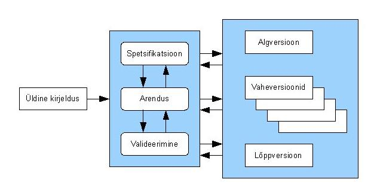

Inkrementaalse arendusmudel on etapiviisiline ja ajagraafikut järgiv strateegia
Kus süsteemi erinevaid osi arendatakse erinevatel aegadel ja erineva kiirusega
ning kui üks osa valmis saab, integreeritakse see juba valmis süsteemiga
Alternatiivne strateegia oleks kodeerida kõik süsteemi osad ja siis kogu kood integreerida ühekorraga
Inkrementaalne arendusmudel algab sellega et kõigepealt määratakse nõuded üldisemal kujul ning
nad jaotatakse tähtsamateks ja vähemtähtsamateks. Siis määratakse tarneosad mitme tarnena ja millest koosnevana klient oma tarkvara saama hakkab
Tarne all mõeldakse süsteemi osa ehk inkrementi. Iga tarne peab lisama süsteemile kindla funktsionaalsuse.
Sealjuures tootmist alustatakse kõrgema prioriteediga osadest. Kui süsteemi osad on määratud
Võetakse ette 1.osa ja hakatakse seda detailiseerima, kasutades selleks sobivimat protsesse.
Samaaegselt saab täpsustada teiste osade nõudeid, kuid töös oleva osa nõuded on külmutatud.
Kui väga vaja pöördutakse selle osa juurde hiljem tagasi. Kui usa saab valmis, tarnitakse see
kliendile, kes saab selle töösse rakendada. See aitab klindil täpsustada nõudeid järgmiste osade jaoks
Seejärel võetakse käsile järgmine osa. Uued osad liidestatakse olemasoleva süsteemiga. Kõiki osi
ei pea arendama sama protsessi kaudu.
